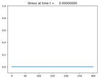
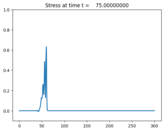
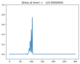

1-dimensional nonlinear elasticity¶
Output:¶
  Source:¶
#!/usr/bin/env python
# encoding: utf-8
r"""
Solitary wave formation in periodic nonlinear elastic media
===========================================================
Solve a one-dimensional nonlinear elasticity system:
.. math::
\epsilon_t + u_x & = 0 \\
(\rho(x) u)_t + \sigma(\epsilon,x)_x & = 0.
Here :math:`\epsilon` is the strain, :math:`\sigma` is the stress,
u is the velocity, and :math:`\rho(x)` is the density.
We take the stress-strain relation :math:`\sigma = e^{K(x)\epsilon}-1`;
:math:`K(x)` is the linearized bulk modulus.
Note that the density and bulk modulus may depend explicitly on x.
The problem solved here is based on [LeVYon03]_. An initial hump
evolves into two trains of solitary waves.
"""
import numpy as np
def qinit(state,ic=2,a2=1.0,xupper=600.):
x = state.grid.x.centers
if ic==1: #Zero ic
state.q[:,:] = 0.
elif ic==2:
# Gaussian
sigma = a2*np.exp(-((x-xupper/2.)/10.)**2.)
state.q[0,:] = np.log(sigma+1.)/state.aux[1,:]
state.q[1,:] = 0.
def setaux(x,rhoB=4,KB=4,rhoA=1,KA=1,alpha=0.5,xlower=0.,xupper=600.,bc=2):
aux = np.empty([3,len(x)],order='F')
xfrac = x-np.floor(x)
#Density:
aux[0,:] = rhoA*(xfrac<alpha)+rhoB*(xfrac>=alpha)
#Bulk modulus:
aux[1,:] = KA *(xfrac<alpha)+KB *(xfrac>=alpha)
aux[2,:] = 0. # not used
return aux
def b4step(solver,state):
#Reverse velocity at trtime
#Note that trtime should be an output point
if state.t>=state.problem_data['trtime']-1.e-10 and not state.problem_data['trdone']:
#print 'Time reversing'
state.q[1,:]=-state.q[1,:]
state.q=state.q
state.problem_data['trdone']=True
if state.t>state.problem_data['trtime']:
print('WARNING: trtime is '+str(state.problem_data['trtime'])+\
' but velocities reversed at time '+str(state.t))
#Change to periodic BCs after initial pulse
if state.t>5*state.problem_data['tw1'] and solver.bc_lower[0]==0:
solver.bc_lower[0]=2
solver.bc_upper[0]=2
solver.aux_bc_lower[0]=2
solver.aux_bc_upper[0]=2
def zero_bc(state,dim,t,qbc,auxbc,num_ghost):
"""Set everything to zero"""
if dim.on_upper_boundary:
qbc[:,-num_ghost:]=0.
def moving_wall_bc(state,dim,t,qbc,auxbc,num_ghost):
"""Initial pulse generated at left boundary by prescribed motion"""
if dim.on_lower_boundary:
qbc[0,:num_ghost]=qbc[0,num_ghost]
t=state.t; t1=state.problem_data['t1']; tw1=state.problem_data['tw1']
a1=state.problem_data['a1'];
t0 = (t-t1)/tw1
if abs(t0)<=1.: vwall = -a1*(1.+np.cos(t0*np.pi))
else: vwall=0.
for ibc in range(num_ghost-1):
qbc[1,num_ghost-ibc-1] = 2*vwall*state.aux[1,ibc] - qbc[1,num_ghost+ibc]
def setup(use_petsc=0,kernel_language='Fortran',solver_type='classic',outdir='./_output',
tfinal=500., num_output_times = 20):
from clawpack import riemann
if use_petsc:
import clawpack.petclaw as pyclaw
else:
from clawpack import pyclaw
if kernel_language=='Python':
rs = riemann.nonlinear_elasticity_1D_py.nonlinear_elasticity_1D
elif kernel_language=='Fortran':
rs = riemann.nonlinear_elasticity_fwave_1D
if solver_type=='sharpclaw':
solver = pyclaw.SharpClawSolver1D(rs)
solver.char_decomp=0
else:
solver = pyclaw.ClawSolver1D(rs)
solver.kernel_language = kernel_language
solver.bc_lower[0] = pyclaw.BC.custom
solver.bc_upper[0] = pyclaw.BC.extrap
#Use the same BCs for the aux array
solver.aux_bc_lower[0] = pyclaw.BC.extrap
solver.aux_bc_upper[0] = pyclaw.BC.extrap
xlower=0.0; xupper=300.0
cells_per_layer=12; mx=int(round(xupper-xlower))*cells_per_layer
x = pyclaw.Dimension(xlower,xupper,mx,name='x')
domain = pyclaw.Domain(x)
state = pyclaw.State(domain,solver.num_eqn,num_aux=3)
state.problem_data['stress_relation'] = 'exponential'
#Set global parameters
alpha = 0.5
KA = 1.0
KB = 4.0
rhoA = 1.0
rhoB = 4.0
state.problem_data = {}
state.problem_data['t1'] = 10.0
state.problem_data['tw1'] = 10.0
state.problem_data['a1'] = 0.1
state.problem_data['alpha'] = alpha
state.problem_data['KA'] = KA
state.problem_data['KB'] = KB
state.problem_data['rhoA'] = rhoA
state.problem_data['rhoB'] = rhoB
state.problem_data['trtime'] = 999999999.0
state.problem_data['trdone'] = False
#Initialize q and aux
xc=state.grid.x.centers
state.aux[:,:] = setaux(xc,rhoB,KB,rhoA,KA,alpha,xlower=xlower,xupper=xupper)
qinit(state,ic=1,a2=1.0,xupper=xupper)
solver.max_steps = 5000000
solver.fwave = True
solver.before_step = b4step
solver.user_bc_lower=moving_wall_bc
solver.user_bc_upper=zero_bc
claw = pyclaw.Controller()
claw.num_output_times = num_output_times
claw.outdir = outdir
claw.output_style = 1
if outdir is None:
claw.output_format = None
claw.tfinal = tfinal
claw.solution = pyclaw.Solution(state,domain)
claw.solver = solver
claw.setplot = setplot
claw.keep_copy = True
return claw
#--------------------------
def setplot(plotdata):
#--------------------------
"""
Specify what is to be plotted at each frame.
Input: plotdata, an instance of visclaw.data.ClawPlotData.
Output: a modified version of plotdata.
"""
plotdata.clearfigures() # clear any old figures,axes,items data
# Figure for q[0]
plotfigure = plotdata.new_plotfigure(name='Stress', figno=1)
# Set up for axes in this figure:
plotaxes = plotfigure.new_plotaxes()
plotaxes.title = 'Stress'
plotaxes.ylimits = [-0.1,1.0]
# Set up for item on these axes:
plotitem = plotaxes.new_plotitem(plot_type='1d_plot')
plotitem.plot_var = stress
plotitem.kwargs = {'linewidth':2}
# Figure for q[1]
plotfigure = plotdata.new_plotfigure(name='Velocity', figno=2)
# Set up for axes in this figure:
plotaxes = plotfigure.new_plotaxes()
plotaxes.xlimits = 'auto'
plotaxes.ylimits = [-.5,0.1]
plotaxes.title = 'Velocity'
# Set up for item on these axes:
plotitem = plotaxes.new_plotitem(plot_type='1d_plot')
plotitem.plot_var = velocity
plotitem.kwargs = {'linewidth':2}
return plotdata
def velocity(current_data):
"""Compute velocity from strain and momentum"""
aux=setaux(current_data.x,rhoB=4,KB=4)
velocity = current_data.q[1,:]/aux[0,:]
return velocity
def stress(current_data):
"""Compute stress from strain and momentum"""
from clawpack.riemann.nonlinear_elasticity_1D_py import sigma
aux=setaux(current_data.x)
epsilon = current_data.q[0,:]
stress = sigma(current_data.q,aux,{'stress_relation':'exponential'})
return stress
if __name__=="__main__":
from clawpack.pyclaw.util import run_app_from_main
output = run_app_from_main(setup,setplot)